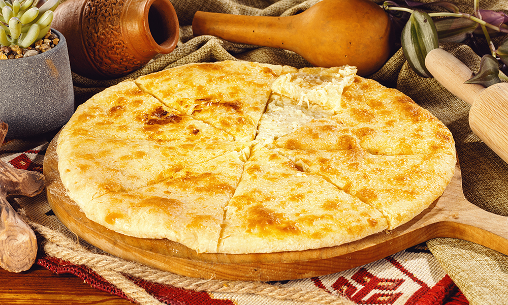

Khachapuri

Ingredients
- 1 kg flour
- 20 g yeast
- 500 ml milk
- 50 ml oil
- 1 tsp salt
- 1.2 kg Georgian soft Imeruli cheese ( Sulguni will also go)
Directions
- Mix warm milk together with yeast. Sift flour into the mixture after 10-15 minutes.. Add salt, oil and knead dough.
- When it is ready cover dough with towel and leave in warm place to rise. Grate cheese and mix with one egg.
- Split filling in balls, each 300 g. When dough rises separate in 300g balls as well.
Roll out each ball, place filling in the center and fold. Overturn the cheese sack and flatten gently using your hands to get round shape.
- Place khachapuri on baking tray, brush with yolk and milk mixture and bake in the oven for 20-25 minutes at medium heat.
When khachapuri turns golden-brown take out and spread butter over it before serving, to your preference.